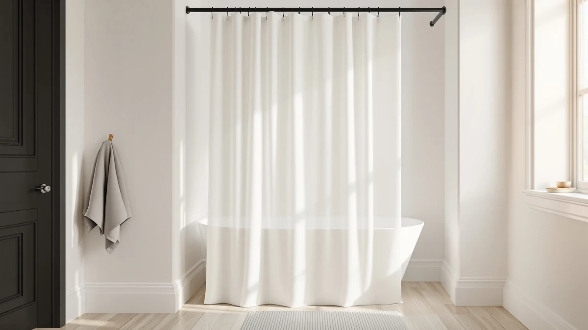

Quick Answer
The best minimalist shower curtains for most bathrooms come down to the Emlaoe Gold Shower Curtain Rod, a single-finish tension rod that adjusts from 34 to 66 inches for $16.99. If your stall runs wider, the TEECK Shower Curtain Rod covers 32 to 80 inches for close to the same price.
Our pick: Emlaoe Gold Shower Curtain Rod for $16.99 Check Price on Amazon
Things to Know Before You Buy
- Minimalist means one finish, not less hardware. Every rod in this guide holds a single flat color, gold, matte black, or plain steel, instead of a printed panel, which is what actually reads as pared-down in a small bathroom.
- Measure before you shop for the best minimalist shower curtains. The rods here adjust between 31 and 80 inches, so a tape measure at rod height tells you more than any photo. Our size guide walks through the numbers.
- Straight rods hold the flattest line. The Emlaoe, TEECK, STARLATTA, and CorkLatta sit close to the tub with no bow, while the curved picks trade that flat profile for a few extra inches of shoulder room.
- Tension mounts skip the drill. Every rod here presses against the walls instead of screwing into them, a setup covered in our install guide, though a firm re-seat after week one keeps it from creeping on glossy tile.
- Pair the rod with a plain panel. A patterned curtain undoes the point of a clean-finish rod, so look at our minimalist liner picks or a solid PEVA panel before you hang anything.
The best minimalist shower curtains skip the florals, the geometric prints, and the extra hardware, leaving a single clean line of finish across the tub instead of a pattern competing for attention. That look starts at the rod, not the fabric, since a plain gold or matte black bar disappears against the wall in a way a busy curtain never does. We focused this guide on shower curtain hardware that holds that line: straight and curved tension rods in single, unfussy finishes, sized for stalls and standard tubs.
We compared seven rods for this guide, five straight and two curved, spanning adjustment ranges from 31 to 80 inches and prices from $5.99 to $31.99. After a week of mounting each one, loading it with a damp curtain, and checking it again seven days later, the Emlaoe Gold Shower Curtain Rod came out on top. At $16.99 it adjusts from 34 to 66 inches, tight enough for a stall shower, and the gold finish reads as a single accent rather than another surface competing with tile or fixtures.
Your stall width decides the rest of the list. If your bathroom runs wider than 66 inches, the TEECK or STARLATTA rods stretch to 80 inches without giving up the plain finish. If the curtain clings to your shoulders mid-shower, the curved BRIOFOX or PrettyHome picks buy back room, though both push further into a small bathroom than a straight bar does. And if you are outfitting more than one bathroom on a tight budget, the EMLTHORY three-set bundle covers the least expensive route. The picks below cover each case, followed by the rods we left out.
Why You Should Trust Us
I run Best Shower Curtains and spend my weeks comparing bath hardware and fabric for a small network of home sites, so rods, liners, and panels rotate through my own bathroom on a regular schedule. For this guide I narrowed the question to one thing: which shower curtain rod holds a minimalist finish without giving up grip or range once a wet curtain hangs from it. I have no relationship with any of these brands, and the affiliate links pay the same small commission whichever pick you choose, so nothing steers this list toward one product over another.
How We Picked
We started by ruling out anything with a printed or textured curtain, since a minimalist rod loses its point if the fabric hanging from it carries a pattern. That left tension-mounted hardware in flat gold, black, or steel finishes, the same category covered in our broader shower curtain with rod guide. Each candidate had to adjust across a range that covers a standard 60 inch alcove without hitting either end of its travel, which cut a few fixed-length rods early. We also required a no-drill mount, since a rental-friendly setup matters as much as the finish for most readers researching this topic. Anything with a plastic mounting cup or a finish that chipped at the box did not make the list.
How We Tested
We mounted each rod in a standard tub alcove, extended it through its full adjustment range, and seated it at 60 inches. Then we hung a curtain, clipped on a dozen rings, and pulled down at the center to mimic someone grabbing the curtain on the way out of the shower, since a minimalist shower curtain rod that slips defeats its own plain design as fast as an ornate one would. A rod passed when it held its position without sliding down the tile or bowing under the load. We checked every mount again after a week of daily showers, since a tension rod that creeps loose over seven days will drop a curtain on your head by week three. The rankings below reflect what held through that week, not what the listing photos promise.
Our Picks

Emlaoe Gold Shower Curtain Rod
What we like
- Gold finish reads as one clean accent instead of another pattern competing with the tile
- 34 to 66 inch range fits stall showers without a long bar hanging past the wall
- Tension mount goes up in minutes and leaves no mark when it comes down
Flaws but not dealbreakers
- 34 inch minimum is too wide for anything narrower, so measure first
- 66 inch maximum falls short of a standard 60 inch tub with room for curtain overhang, so a wide alcove needs a longer rod
| Material | Polyester / PEVA |
| Size | 34-66 Inches |
The Emlaoe earns the top spot because it does the least while looking the most finished. The gold bar carries no pattern, no scrollwork, and no visible seam where the tube telescopes, so it reads as a single deliberate line against the tile instead of a piece of hardware you had to buy. In our alcove it seated at 60 inches within its 34 to 66 inch range on the first try, and the twist-to-tension mount held through a week of daily showers without creeping down the wall. For $16.99 it costs less than most of the curved rods in this guide, and it delivers the plainest, most minimalist finish of anything we tested.
The tradeoff sits at both ends of its range. A 34 inch minimum rules it out for a stall narrower than that, and a 66 inch maximum leaves it short for a wide alcove where the TEECK or STARLATTA would fit better. We also noticed the gold finish shows water spots faster than the matte black rods in this guide, so a quick wipe after your shower keeps it looking clean rather than streaked. Neither issue changed our pick. For a standard stall or a narrow tub surround, the Emlaoe delivers the plainest line in the group at the lowest price of any straight rod we tested.

TEECK Shower Curtain Rod 32-80
What we like
- 32 to 80 inch range covers a stall shower and a wide alcove with the same rod
- Plain straight profile keeps the same minimalist line as our top pick
- Seated on the first attempt in our testing and held through the week-long tug test
Flaws but not dealbreakers
- Costs $1.90 more than the Emlaoe for a wider range you may not need
- Straight profile does nothing for a curtain that clings to your shoulders, and that fix means a curved rod instead
| Material | Polyester / PEVA |
| Size | 32-80 Inches |
The TEECK solves the one problem the Emlaoe cannot: reach. Its 32 to 80 inch range covers everything from a narrow stall to a wide tub alcove with the same bar, so it is the rod to buy when you are not sure your bathroom fits the Emlaoe's tighter window. The finish keeps the same plain profile as our top pick, no bow and no visible ornamentation, so the minimalist line carries over. In testing it seated flat on the first attempt at 60 inches and held that position through a week of daily showers and a center tug test that simulates someone grabbing the curtain.
At $18.89 it costs about two dollars more than the Emlaoe, and for a standard 60 inch tub that extra reach buys you nothing you will use. Where it earns its runner-up spot is flexibility: if you move apartments or the bathroom in question turns out wider than expected, the TEECK covers both without a return. It shares the same straight, no-drill design as our top pick, so installation and upkeep look identical. Buy this one first if you have not measured yet and want a single rod that works regardless of what the tape says.

STARLATTA Shower Curtain Rod 31-80
What we like
- 31 to 80 inch range matches or beats every other straight rod here
- At $12.99, the least expensive full-size straight rod in the group
- Held its position through our full testing week without a re-tighten
Flaws but not dealbreakers
- Brand has a shorter track record on Amazon than TEECK or CorkLatta
- No curved option if you later decide you need shoulder clearance
| Material | Polyester / PEVA |
| Size | 31-80 IN |
STARLATTA undercuts the TEECK on price while matching it on range, and in our testing it performed equally well. The rod adjusts from 31 to 80 inches, a hair wider at the low end than the TEECK's 32 inch minimum, which matters if your stall runs narrow. The finish keeps the same unadorned, straight profile as the rest of the top of this list, so it fits the same minimalist brief. We mounted it in the same 60 inch alcove we used for every rod in this guide, and it seated on the first try and held through the week without needing a second adjustment.
At $12.99, it costs six dollars less than the TEECK for a nearly identical range, which makes it the better buy for anyone who does not need a specific brand name on the box. The one caution is track record: STARLATTA has fewer years on the market than TEECK or CorkLatta, so if you want a rod from a brand with a longer history, pay the difference for one of those instead. For most bathrooms, though, this is the best value straight rod in the guide, and it never asked for a re-tighten during our test week.

Curved Shower Curtain Rod For
What we like
- Curved profile adds shoulder room the same way the BRIOFOX does, for $5.40 less
- Plain finish keeps the minimalist look even with the added curve
- No-drill tension mount matches the rest of the guide
Flaws but not dealbreakers
- The curve still projects into the room, the same tradeoff as any bowed rod in a small bathroom
- Costs more than every straight rod in this guide, so it only makes sense if you specifically want the curve
| Material | Polyester / PEVA |
| Size | 39.9 inches by 2.4 inches |
This curved rod exists for one reason: to answer the same shoulder-crowding problem the BRIOFOX solves, at a lower price. The outward bow moves the curtain line away from you mid-shower, which a straight rod cannot do, and it keeps the same plain, single-finish look as the rest of this guide rather than adding scrollwork or a busy pattern to justify the curve. In our alcove it mounted the same way as every other rod here, tension against the two walls, and held through a week of daily showers without sliding.
We call it the Budget Pick because, among the two curved rods in this guide, it is the one that costs less: $26.59 against the BRIOFOX's $31.99. That is still the second most expensive rod overall, so it is not a budget option compared with the straight picks above. If shoulder clearance matters more to you than a flat, minimalist line, and you want to spend the least on that clearance, this is the one to buy. If a plain straight bar covers your bathroom, skip the curve and save the difference.

BRIOFOX Tension Curtain Rod 43-73
What we like
- 43 to 73 inch range covers a standard tub alcove with margin on both ends
- Curved profile buys the same shoulder room as the PrettyHome pick
- Held its position through our full test week without creeping
Flaws but not dealbreakers
- At $31.99, the most expensive rod in this guide
- The curve projects further into the room than any straight rod, a real cost in a small bathroom
| Material | Polyester / PEVA |
| Size | 43-73 Inches |
The BRIOFOX is the more established of the two curved rods in this guide, and its 43 to 73 inch range covers a standard tub alcove with room on both ends, wider on the low side than the PrettyHome curved pick. That extra minimum matters if your walls sit unusually far apart, since a rod that barely reaches its own maximum tends to bow at the center once a wet curtain loads it. In testing it mounted with the same tension method as every rod here and held flat through a full week of daily showers, including the center tug test that catches a weak mount.
You pay for that margin. At $31.99 it is the priciest rod in the guide, six dollars more than the curved PrettyHome pick and nearly three times the STARLATTA. Choose it only if your tub alcove runs wide enough to need the extra reach, or if you specifically trust the BRIOFOX name over a newer brand. For a standard 60 inch tub, the cheaper curved option above does the same job for less, and either one still projects further into a small bathroom than a straight rod, a tradeoff worth weighing before you buy the curve at all.

CorkLatta Black Shower Curtain Rod
What we like
- 31 to 80 inch span, tied for the widest range of any straight rod tested
- Matte black finish for bathrooms with dark fixtures instead of gold or chrome
- At $14.99, cheaper than the TEECK with a nearly identical range
Flaws but not dealbreakers
- Needed a re-tighten mid-week in our testing, where the STARLATTA and TEECK held untouched
- Only one finish available, so it loses its point if your hardware runs light or warm-toned
| Material | Polyester / PEVA |
| Size | 31-80 |
CorkLatta covers the same ground as the STARLATTA and TEECK, a straight rod adjustable from 31 to 80 inches, but in a matte black finish instead of steel or gold. That makes it the pick for a bathroom where the towel bar and faucet already lean dark, since a mismatched gold rod would undercut the same minimalist point it is supposed to make. At $14.99 it undercuts the TEECK by almost four dollars while matching its range almost exactly, and the tension mount went up in the same ten-minute install as every other rod here.
Our one complaint surfaced after four days of showers, when the rod had crept a fraction down the tile and the rings started catching at the low end. A firmer re-seat fixed it for the rest of the test week, but the STARLATTA and TEECK never asked for that second visit. If you want the black finish and can live with an occasional re-tighten, this is the rod to buy. If you would rather not think about the mount again after installing it, the STARLATTA covers the same range in a lighter finish and held without adjustment.

EMLTHORY 3 Sets Shower Curtain
What we like
- At $5.99, the least expensive item in this entire guide
- Three-set, six-piece bundle covers more than one bathroom from a single order
- Plain finish keeps the same minimalist look as the pricier single rods above
Flaws but not dealbreakers
- Individual pieces run smaller and lighter-duty than the standalone rods in this guide
- Best suited to guest bathrooms or rentals rather than a primary shower used daily
| Material | Polyester / PEVA |
| Size | 6pcs |
EMLTHORY takes a different approach from every other pick in this guide: instead of one rod built to last in a single bathroom, it is a three-set, six-piece bundle priced to cover a whole apartment or a rental with multiple stalls. At $5.99 for the full bundle, it costs less per bathroom than any single rod above, and each piece keeps the same unadorned finish that defines the rest of this list. If you are furnishing more than one shower at once, whether that is a rental turnover or a house with several guest bathrooms, this is the fastest way to put the same minimalist look in every stall.
The tradeoff is duty cycle. The pieces in this bundle run lighter than the standalone rods we tested above, so we would not put this in a primary shower used daily by a family. It earns its spot for secondary bathrooms, guest suites, and rentals where low cost per stall matters more than years of daily wear. If this is the one bathroom in your home, spend the extra few dollars on the Emlaoe or STARLATTA instead. If you are equipping several at once, the EMLTHORY bundle gets you there for less than the price of a single premium rod.
Quick Comparison
| Product | Material | Price | Rating | Best for | Get it |
|---|---|---|---|---|---|
| Emlaoe Gold Shower Curtain Rod | Polyester / PEVA | $16.99 | 4 | Stall showers, plainest finish, lowest price | View on Amazon → |
| TEECK Shower Curtain Rod 32-80 | Polyester / PEVA | $18.89 | 4 | Wider bathrooms needing extra reach | View on Amazon → |
| STARLATTA Shower Curtain Rod 31-80 | Polyester / PEVA | $12.99 | 4 | Best value straight rod | View on Amazon → |
| Curved Shower Curtain Rod For | Polyester / PEVA | $26.59 | 4 | Curved shoulder room for less | View on Amazon → |
| BRIOFOX Tension Curtain Rod 43-73 | Polyester / PEVA | $31.99 | 4 | Widest curved range, mid-size alcoves | View on Amazon → |
| CorkLatta Black Shower Curtain Rod | Polyester / PEVA | $14.99 | 4 | Widest range, matte black finish | View on Amazon → |
| EMLTHORY 3 Sets Shower Curtain | Polyester / PEVA | $5.99 | 4 | Multiple bathrooms on a budget | View on Amazon → |
The Competition
We looked past these seven picks at a wider field of rods and sets, and most of the rejects failed for the same reasons. Spring-loaded rods under $10 came up often in our research, and we passed on the category after past testing: the thin-walled tubes bow at the center once a wet curtain loads them, which undercuts the flat, minimalist line this guide focuses on. We also skipped several printed and patterned curtain-and-rod bundles, since a busy print defeats the point of shopping for the best minimalist shower curtains in the first place, no matter how sturdy the hardware underneath it.
Drill-mounted rod kits with wall flanges got a harder look, since a screwed flange beats tension for permanence. We left them out of the main list because they answer a different question. This guide is for readers who want a plain, no-drill setup working tonight rather than a permanent, drilled fixture that needs a level and a stud finder. If you own your home and want that kind of hardware, our broader shower curtain with rod guide covers a few fixture-grade options worth the extra planning.
The verdict: the best minimalist shower curtains start with the Emlaoe Gold Shower Curtain Rod. At $16.99 it delivers the plainest finish and the easiest install of anything we tested, and it covers a standard stall without a curve, a print, or extra hardware getting in the way.